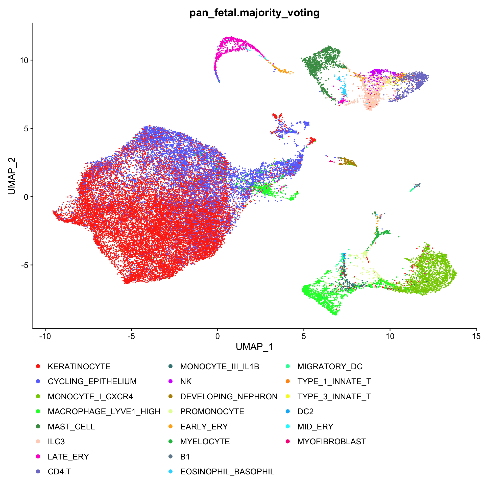
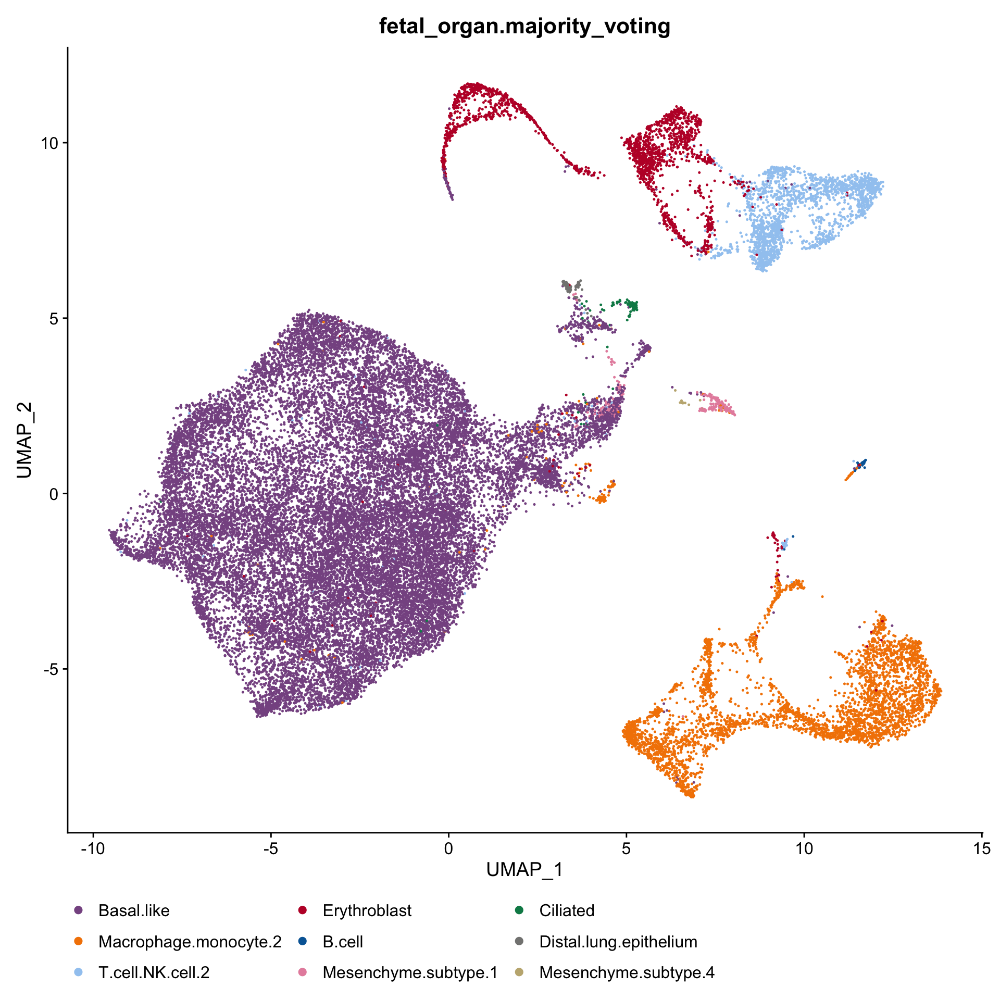
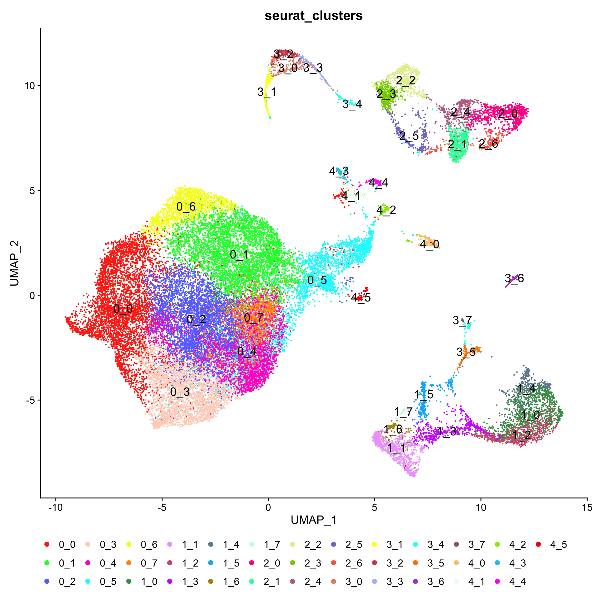
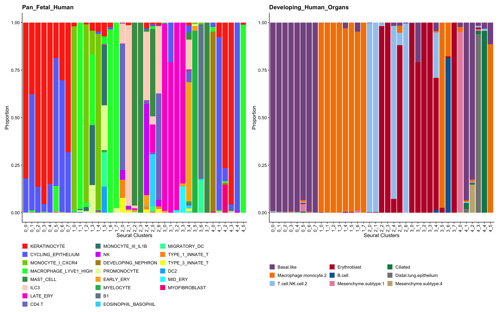
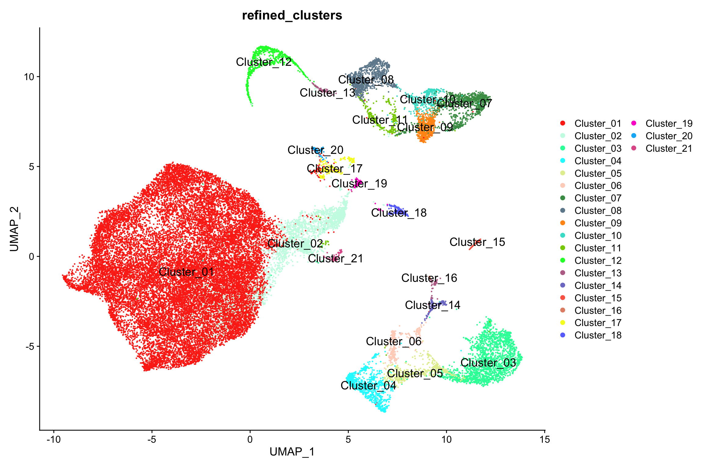
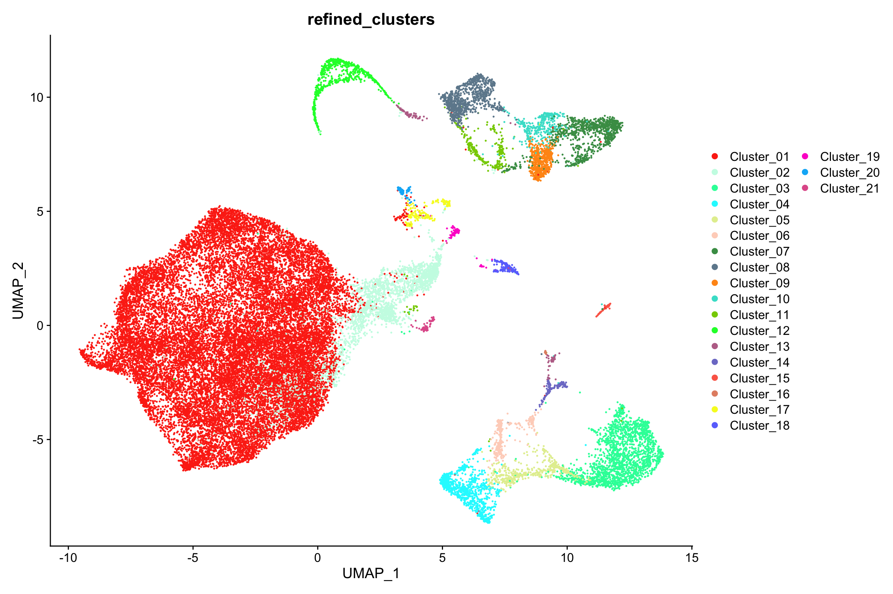
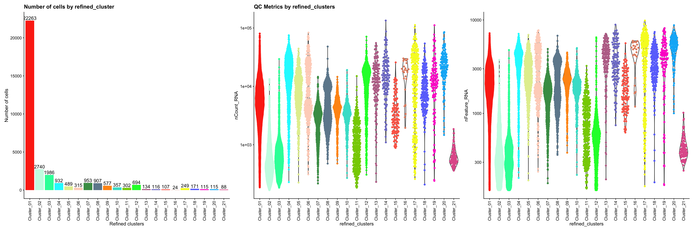
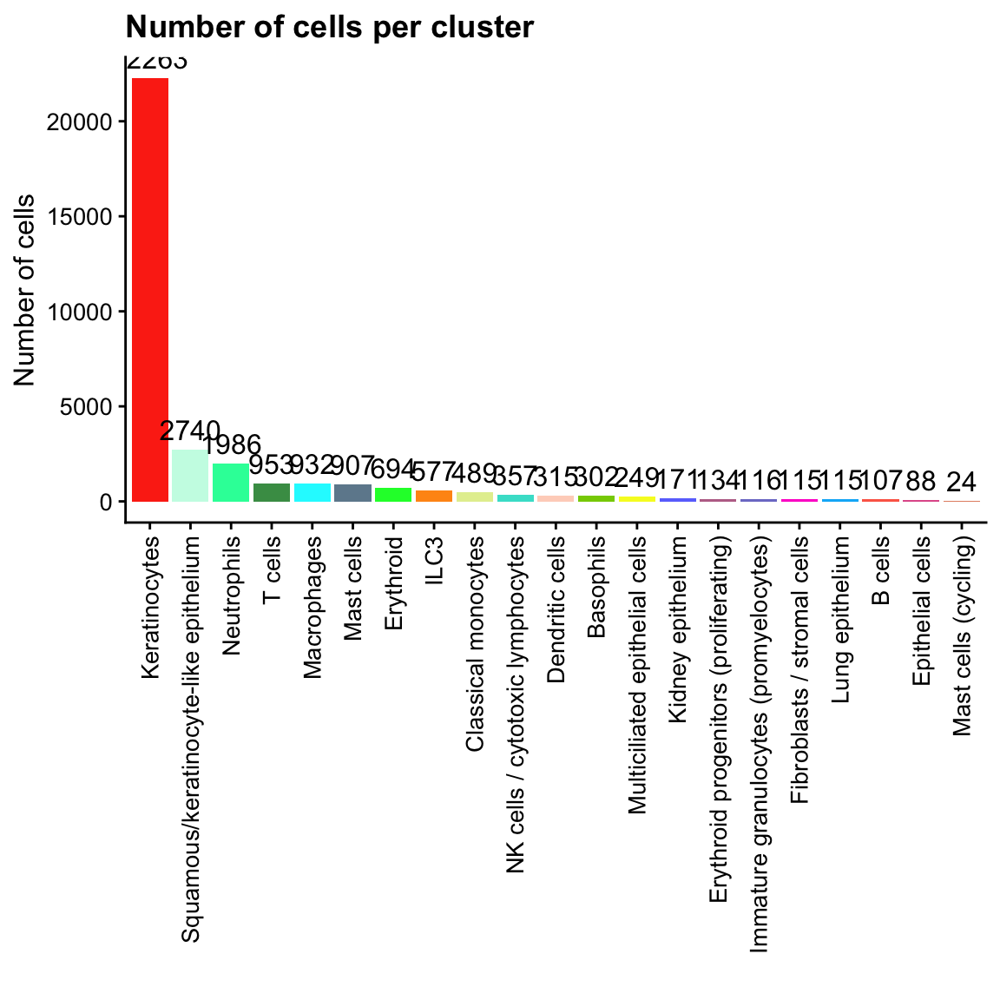
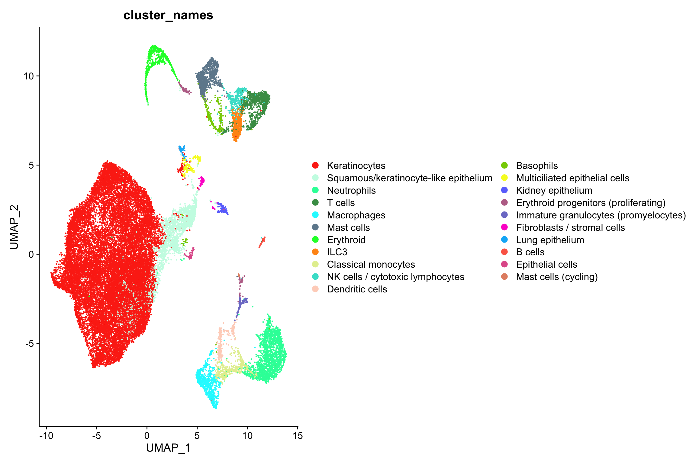

Last updated: 2026-10-13
Checks: 7 0
Knit directory: amniosinglecell/
This reproducible R Markdown analysis was created with workflowr (version 1.7.2). The Checks tab describes the reproducibility checks that were applied when the results were created. The Past versions tab lists the development history.
Great! Since the R Markdown file has been committed to the Git repository, you know the exact version of the code that produced these results.
Great job! The global environment was empty. Objects defined in the global environment can affect the analysis in your R Markdown file in unknown ways. For reproduciblity it’s best to always run the code in an empty environment.
The command set.seed(20220125) was run prior to running
the code in the R Markdown file. Setting a seed ensures that any results
that rely on randomness, e.g. subsampling or permutations, are
reproducible.
Great job! Recording the operating system, R version, and package versions is critical for reproducibility.
Nice! There were no cached chunks for this analysis, so you can be confident that you successfully produced the results during this run.
Great job! Using relative paths to the files within your workflowr project makes it easier to run your code on other machines.
Great! You are using Git for version control. Tracking code development and connecting the code version to the results is critical for reproducibility.
The results in this page were generated with repository version 72af9ae. See the Past versions tab to see a history of the changes made to the R Markdown and HTML files.
Note that you need to be careful to ensure that all relevant files for
the analysis have been committed to Git prior to generating the results
(you can use wflow_publish or
wflow_git_commit). workflowr only checks the R Markdown
file, but you know if there are other scripts or data files that it
depends on. Below is the status of the Git repository when the results
were generated:
Ignored files:
Ignored: .DS_Store
Ignored: .Rhistory
Ignored: .Rproj.user/
Ignored: analysis/generate_site.R
Ignored: analysis/knit_docs.R
Ignored: analysis/run_as_job.R
Ignored: analysis/sccomp_draws_files/
Ignored: celltypist/output_Gerli_et_al_2024_fetal_organ/
Ignored: celltypist/output_Gerli_et_al_2024_pan_fetal/
Ignored: data/
Ignored: excluded_analysis/
Ignored: output/
Ignored: renv/.DS_Store
Ignored: renv/library/
Ignored: renv/staging/
Ignored: sccomp_draws_files/
Untracked files:
Untracked: AmnioSC_Manuscript_Claude/
Untracked: claude_log/
Note that any generated files, e.g. HTML, png, CSS, etc., are not included in this status report because it is ok for generated content to have uncommitted changes.
These are the previous versions of the repository in which changes were
made to the R Markdown
(analysis/Gerli_et_al_2024.refined_annotations.Rmd) and
HTML (docs/Gerli_et_al_2024.refined_annotations.html)
files. If you’ve configured a remote Git repository (see
?wflow_git_remote), click on the hyperlinks in the table
below to view the files as they were in that past version.
| File | Version | Author | Date | Message |
|---|---|---|---|---|
| Rmd | 72af9ae | Calandra Grima | 2026-10-13 | wflow_publish(here("analysis", "Gerli_et_al_2024.refined_annotations.Rmd")) |
| html | 6670693 | Calandra Grima | 2026-08-05 | Build site. |
| html | e2c779e | calandra.grima | 2026-06-30 | Build site. |
| Rmd | 733c4ff | calandra.grima | 2026-06-30 | wflow_publish(here("analysis", "Gerli_et_al_2024.refined_annotations.Rmd")) |
| html | d9e1b78 | calandra.grima | 2026-02-18 | Build site. |
| Rmd | 6e3fe60 | calandra.grima | 2026-02-18 | wflow_publish(here("analysis", "Gerli_et_al_2024.refined_annotations.Rmd")) |
| html | b5c1806 | Calandra Grima | 2025-11-21 | Build site. |
| Rmd | 818ded0 | Calandra Grima | 2025-11-21 | wflow_publish(here("analysis", "Gerli_et_al_2024.refined_annotations.Rmd")) |
| html | fae1787 | Calandra Grima | 2025-11-21 | Build site. |
| html | 870de91 | Calandra Grima | 2025-11-20 | Build site. |
| Rmd | 574021f | Calandra Grima | 2025-11-20 | wflow_publish(here("analysis", "Gerli_et_al_2024.refined_annotations.Rmd")) |
| html | d052513 | Calandra Grima | 2025-04-14 | Build site. |
| Rmd | 628fb02 | Calandra Grima | 2025-04-14 | wflow_publish(here("analysis", "Gerli_et_al_2024.refined_annotations.Rmd")) |
| html | 2226b98 | Calandra Grima | 2025-04-07 | Build site. |
| Rmd | 6de2204 | Calandra Grima | 2025-04-07 | wflow_publish(here("analysis", "Gerli_et_al_2024.refined_annotations.Rmd")) |
| html | dd29e7b | Calandra Grima | 2025-04-03 | Build site. |
| Rmd | 1ba88ff | Calandra Grima | 2025-04-03 | wflow_publish(here("analysis", "Gerli_et_al_2024.refined_annotations.Rmd")) |
| html | f221766 | Calandra Grima | 2025-03-21 | Build site. |
| Rmd | d728672 | Calandra Grima | 2025-03-21 | wflow_publish(here("analysis", "Gerli_et_al_2024.refined_annotations.Rmd")) |
| html | 1ec97e2 | Calandra Grima | 2025-01-08 | Build site. |
| Rmd | d2c12be | Calandra Grima | 2025-01-08 | wflow_publish(here("analysis", "Gerli_et_al_2024.refined_annotations.Rmd")) |
| html | d8c14fe | Calandra Grima | 2025-01-08 | Rename Gerli analysis pages to a less confusing naming scheme |
library(Seurat)
library(SeuratObject)
library(clustree)
library(scater)
library(stringr)
library(ggplot2)
library(ggbeeswarm)
library(cowplot)
library(patchwork)
library(egg)
library(workflowr)
library(here)
library(sessioninfo)
library(viridis)
library(Polychrome)
source(here("code", "helper_functions.R"))
source(here("code", "load_colour_schemes.R"))
RERUN_ALL <- TRUEseu_int <- readRDS(here("data", "Gerli_et_al_2024",
"Gerli_et_al_2024.Integrated_clustered.Seurat.rds"))ALL_CLUSTER_COLOURS <- c(light.colors(n = 24), sky.colors(n = 13))
names(ALL_CLUSTER_COLOURS) <- levels(seu_int$seurat_clusters)DimPlot(seu_int, reduction = 'umap', group.by = "pan_fetal.majority_voting",) +
scale_colour_manual(values = ALL_CELL_TYPE_COLOURS[levels(seu_int$pan_fetal.majority_voting)]) +
guides(color=guide_legend(ncol = 3, override.aes = list(size=2))) +
bottom_legendWarning: `aes_string()` was deprecated in ggplot2 3.0.0.
ℹ Please use tidy evaluation idioms with `aes()`.
ℹ See also `vignette("ggplot2-in-packages")` for more information.
ℹ The deprecated feature was likely used in the Seurat package.
Please report the issue at <https://github.com/satijalab/seurat/issues>.
This warning is displayed once per session.
Call `lifecycle::last_lifecycle_warnings()` to see where this warning was
generated.
DimPlot(seu_int, reduction = 'umap', group.by = "fetal_organ.majority_voting",) +
scale_colour_manual(values = ALL_CELL_TYPE_COLOURS[levels(seu_int$fetal_organ.majority_voting)]) +
guides(color=guide_legend(ncol = 3, override.aes = list(size=2))) +
bottom_legend
DimPlot(seu_int, reduction = 'umap', label = TRUE, label.size = 5,
group.by = "seurat_clusters") +
scale_colour_manual(values = ALL_CLUSTER_COLOURS) +
guides(color=guide_legend(nrow = 3, override.aes = list(size=2))) +
bottom_legend
seu_int@meta.data %>%
ggplot(aes(x = seurat_clusters,
fill = pan_fetal.majority_voting)) +
geom_bar(position="fill") +
theme_cowplot(12) +
ylab("Proportion") + xlab("Seurat Clusters") +
scale_fill_manual(values = ALL_CELL_TYPE_COLOURS[levels(seu_int$pan_fetal.majority_voting)]) +
guides(fill=guide_legend(ncol = 3)) + bottom_legend + theme(legend.title = element_blank()) + rotate_x_labels +
ggtitle("Pan_Fetal_Human") -> p1
seu_int@meta.data %>%
ggplot(aes(x = seurat_clusters,
fill = fetal_organ.majority_voting)) +
geom_bar(position="fill") +
theme_cowplot(12) +
ylab("Proportion") + xlab("Seurat Clusters") +
scale_fill_manual(values = ALL_CELL_TYPE_COLOURS[levels(seu_int$fetal_organ.majority_voting)]) +
guides(fill=guide_legend(ncol = 3)) + bottom_legend + theme(legend.title = element_blank()) + rotate_x_labels +
ggtitle("Developing_Human_Organs") -> p2
p1 | p2
table(seu_int$seurat_clusters, seu_int$pan_fetal.majority_voting)
KERATINOCYTE CYCLING_EPITHELIUM MONOCYTE_I_CXCR4 MACROPHAGE_LYVE1_HIGH
0_0 3908 849 2 2
0_1 1687 2735 1 47
0_2 3602 560 1 1
0_3 2899 122 10 3
0_4 2496 442 0 3
0_5 514 1839 6 360
0_6 449 1025 1 1
0_7 953 444 0 0
1_0 19 0 936 10
1_1 0 0 0 792
1_2 6 0 574 15
1_3 21 0 61 182
1_4 19 5 371 3
1_5 23 0 0 13
1_6 2 1 0 81
1_7 0 0 0 40
2_0 2 2 0 0
2_1 8 0 0 0
2_2 0 0 0 0
2_3 0 0 0 0
2_4 11 2 0 0
2_5 3 3 0 4
2_6 3 1 0 0
3_0 0 0 0 1
3_1 0 38 0 0
3_2 0 0 0 0
3_3 0 0 0 0
3_4 2 5 0 0
3_5 0 0 1 0
3_6 0 0 1 0
3_7 0 0 0 0
4_0 0 4 0 4
4_1 12 143 0 1
4_2 88 8 0 1
4_3 110 3 0 0
4_4 0 91 0 0
4_5 1 0 0 87
MAST_CELL ILC3 LATE_ERY CD4.T DOUBLET_LYMPHOID_MACROPHAGE HIGH_MITO
0_0 4 1 0 0 0 0
0_1 1 0 1 1 0 0
0_2 3 0 1 0 0 0
0_3 1 0 0 1 0 0
0_4 0 0 0 0 0 0
0_5 2 9 7 0 0 0
0_6 0 0 0 0 0 0
0_7 0 0 0 0 0 0
1_0 0 0 2 1 0 0
1_1 0 0 0 0 0 0
1_2 0 0 0 0 0 0
1_3 0 0 0 0 0 0
1_4 0 0 2 0 0 0
1_5 0 0 1 0 0 0
1_6 0 0 0 0 0 0
1_7 0 0 0 0 0 0
2_0 0 78 2 493 0 0
2_1 0 548 0 2 0 0
2_2 466 7 4 0 0 0
2_3 423 0 0 0 0 0
2_4 4 129 1 6 0 0
2_5 139 13 44 2 0 0
2_6 0 74 0 117 0 0
3_0 0 0 211 0 0 0
3_1 0 0 144 0 0 0
3_2 0 0 159 0 0 0
3_3 0 0 116 0 0 0
3_4 5 21 1 8 0 0
3_5 0 0 0 0 0 0
3_6 0 0 0 0 0 0
3_7 24 0 0 0 0 0
4_0 0 0 0 0 0 0
4_1 0 1 0 0 0 0
4_2 0 0 0 0 0 0
4_3 1 1 0 0 0 0
4_4 0 0 0 0 0 0
4_5 0 0 0 0 0 0
MONOCYTE_III_IL1B NK DEVELOPING_NEPHRON PROMONOCYTE EARLY_ERY MYELOCYTE
0_0 0 0 0 0 0 0
0_1 0 1 0 0 1 0
0_2 0 0 0 0 0 0
0_3 0 0 0 0 0 0
0_4 0 0 0 0 0 0
0_5 0 0 0 0 3 0
0_6 0 0 0 0 2 1
0_7 0 0 0 0 0 0
1_0 0 0 0 0 0 0
1_1 5 0 0 7 0 0
1_2 13 0 0 5 0 0
1_3 154 0 0 71 0 0
1_4 0 0 0 0 0 2
1_5 100 0 0 74 0 4
1_6 0 0 0 0 0 0
1_7 0 0 0 1 0 0
2_0 0 38 0 0 0 0
2_1 0 9 0 0 1 0
2_2 0 0 0 0 4 0
2_3 0 0 0 0 0 0
2_4 0 171 0 0 20 0
2_5 0 1 0 0 0 0
2_6 0 7 0 0 0 0
3_0 0 0 0 0 2 0
3_1 0 0 0 0 0 0
3_2 0 0 0 0 0 0
3_3 0 0 0 0 2 0
3_4 0 0 0 0 84 1
3_5 0 0 0 1 3 111
3_6 0 0 0 0 0 0
3_7 0 0 0 0 0 0
4_0 0 0 162 0 0 0
4_1 0 0 0 0 0 0
4_2 0 0 1 0 0 0
4_3 0 0 0 0 0 0
4_4 0 1 0 0 0 0
4_5 0 0 0 0 0 0
B1 EOSINOPHIL_BASOPHIL MIGRATORY_DC TYPE_1_INNATE_T TYPE_3_INNATE_T
0_0 0 0 0 0 0
0_1 0 0 1 0 0
0_2 0 0 0 0 0
0_3 0 0 0 0 0
0_4 0 0 0 0 0
0_5 0 0 0 0 0
0_6 0 0 0 0 0
0_7 0 0 0 0 0
1_0 0 0 1 1 0
1_1 0 0 0 0 0
1_2 0 0 0 0 0
1_3 0 0 0 0 0
1_4 0 0 0 1 0
1_5 0 0 57 0 0
1_6 0 0 0 0 0
1_7 0 0 0 0 0
2_0 0 0 0 71 58
2_1 0 1 0 1 7
2_2 0 1 1 0 1
2_3 0 0 0 0 0
2_4 0 1 0 6 6
2_5 0 83 8 2 0
2_6 0 0 0 3 4
3_0 0 0 0 0 0
3_1 0 0 0 0 0
3_2 0 0 0 0 0
3_3 0 0 0 0 0
3_4 2 2 0 0 2
3_5 0 0 0 0 0
3_6 87 1 18 0 0
3_7 0 0 0 0 0
4_0 0 0 0 0 0
4_1 0 0 0 0 0
4_2 0 0 0 0 0
4_3 0 0 0 0 0
4_4 0 0 0 0 0
4_5 0 0 0 0 0
DC2 MID_ERY MYOFIBROBLAST
0_0 0 0 0
0_1 0 0 0
0_2 0 0 0
0_3 0 0 0
0_4 0 0 0
0_5 0 0 0
0_6 0 0 0
0_7 0 0 0
1_0 0 0 0
1_1 3 0 0
1_2 0 0 0
1_3 0 0 0
1_4 0 0 0
1_5 43 0 0
1_6 0 0 0
1_7 0 0 0
2_0 0 0 0
2_1 0 0 0
2_2 0 0 0
2_3 0 0 0
2_4 0 0 0
2_5 0 0 0
2_6 0 0 0
3_0 0 0 0
3_1 0 0 0
3_2 0 2 0
3_3 0 19 0
3_4 0 1 0
3_5 0 0 0
3_6 0 0 0
3_7 0 0 0
4_0 0 0 1
4_1 0 0 0
4_2 0 0 17
4_3 0 0 0
4_4 0 0 0
4_5 0 0 0table(seu_int$seurat_clusters, seu_int$fetal_organ.majority_voting)
Basal.like Macrophage.monocyte.2 T.cell.NK.cell.2 Erythroblast B.cell
0_0 4727 5 25 4 0
0_1 4455 2 15 3 0
0_2 4149 1 13 4 0
0_3 3015 14 6 1 0
0_4 2930 2 6 0 0
0_5 2557 27 17 12 0
0_6 1471 3 3 2 0
0_7 1396 0 1 0 0
1_0 1 965 2 2 0
1_1 1 806 0 0 0
1_2 0 613 0 0 0
1_3 1 488 0 0 0
1_4 12 388 1 2 0
1_5 0 314 0 1 0
1_6 4 79 0 0 0
1_7 0 41 0 0 0
2_0 2 0 740 2 0
2_1 0 0 575 2 0
2_2 0 1 8 475 0
2_3 0 0 0 423 0
2_4 6 0 325 26 0
2_5 5 11 20 266 0
2_6 1 0 208 0 0
3_0 1 0 0 213 0
3_1 38 0 0 144 0
3_2 0 0 0 161 0
3_3 0 0 0 137 0
3_4 6 1 32 93 2
3_5 0 113 0 3 0
3_6 0 19 0 1 87
3_7 0 0 0 24 0
4_0 4 4 0 0 0
4_1 147 1 1 0 0
4_2 95 1 0 0 0
4_3 2 0 1 1 0
4_4 3 0 1 0 0
4_5 10 78 0 0 0
Mesenchyme.subtype.1 Ciliated Distal.lung.epithelium Mesenchyme.subtype.4
0_0 1 4 0 0
0_1 0 1 0 0
0_2 0 1 0 0
0_3 0 0 0 0
0_4 1 2 0 0
0_5 110 17 0 0
0_6 0 0 0 0
0_7 0 0 0 0
1_0 0 0 0 0
1_1 0 0 0 0
1_2 0 0 0 0
1_3 0 0 0 0
1_4 0 0 0 0
1_5 0 0 0 0
1_6 1 0 0 0
1_7 0 0 0 0
2_0 0 0 0 0
2_1 0 0 0 0
2_2 0 0 0 0
2_3 0 0 0 0
2_4 0 0 0 0
2_5 0 0 0 0
2_6 0 0 0 0
3_0 0 0 0 0
3_1 0 0 0 0
3_2 0 0 0 0
3_3 0 0 0 0
3_4 0 0 0 0
3_5 0 0 0 0
3_6 0 0 0 0
3_7 0 0 0 0
4_0 162 0 0 1
4_1 0 5 3 0
4_2 1 1 0 17
4_3 1 2 108 0
4_4 0 88 0 0
4_5 0 0 0 0The one-vs-rest marker gene analysis approach does not work well when there are many clusters of the same cell type arising from overclustering. This is especially evident for the keratinocytes and macrophages, thus we will merge these cluster labels.
seu_int$refined_clusters <- as.character(seu_int$seurat_clusters)
seu_int$refined_clusters <- ifelse(seu_int$refined_clusters %in% c("0_0", "0_1", "0_2", "0_3", "0_4", "0_6", "0_7"),
"Cluster_01",
seu_int$refined_clusters)
seu_int$refined_clusters <- ifelse(seu_int$refined_clusters %in% c("0_5"),
"Cluster_02",
seu_int$refined_clusters)
seu_int$refined_clusters <- ifelse(seu_int$refined_clusters %in% c("1_0", "1_2", "1_4"),
"Cluster_03",
seu_int$refined_clusters)
seu_int$refined_clusters <- ifelse(seu_int$refined_clusters %in% c("1_1", "1_6", "1_7"),
"Cluster_04",
seu_int$refined_clusters)
seu_int$refined_clusters <- ifelse(seu_int$refined_clusters %in% c("1_3"),
"Cluster_05",
seu_int$refined_clusters)
seu_int$refined_clusters <- ifelse(seu_int$refined_clusters %in% c("1_5"),
"Cluster_06",
seu_int$refined_clusters)
seu_int$refined_clusters <- ifelse(seu_int$refined_clusters %in% c("2_0", "2_6"),
"Cluster_07",
seu_int$refined_clusters)
seu_int$refined_clusters <- ifelse(seu_int$refined_clusters %in% c("2_2", "2_3"),
"Cluster_08",
seu_int$refined_clusters)
seu_int$refined_clusters <- ifelse(seu_int$refined_clusters %in% c("2_1"),
"Cluster_09",
seu_int$refined_clusters)
seu_int$refined_clusters <- ifelse(seu_int$refined_clusters %in% c("2_4"),
"Cluster_10",
seu_int$refined_clusters)
seu_int$refined_clusters <- ifelse(seu_int$refined_clusters %in% c("2_5"),
"Cluster_11",
seu_int$refined_clusters)
seu_int$refined_clusters <- ifelse(seu_int$refined_clusters %in% c("3_0", "3_1", "3_2", "3_3"),
"Cluster_12",
seu_int$refined_clusters)
seu_int$refined_clusters <- ifelse(seu_int$refined_clusters %in% c("3_4"),
"Cluster_13",
seu_int$refined_clusters)
seu_int$refined_clusters <- ifelse(seu_int$refined_clusters %in% c("3_5"),
"Cluster_14",
seu_int$refined_clusters)
seu_int$refined_clusters <- ifelse(seu_int$refined_clusters %in% c("3_6"),
"Cluster_15",
seu_int$refined_clusters)
seu_int$refined_clusters <- ifelse(seu_int$refined_clusters %in% c("3_7"),
"Cluster_16",
seu_int$refined_clusters)
seu_int$refined_clusters <- ifelse(seu_int$refined_clusters %in% c("4_1", "4_4"),
"Cluster_17",
seu_int$refined_clusters)
seu_int$refined_clusters <- ifelse(seu_int$refined_clusters %in% c("4_0"),
"Cluster_18",
seu_int$refined_clusters)
seu_int$refined_clusters <- ifelse(seu_int$refined_clusters %in% c("4_2"),
"Cluster_19",
seu_int$refined_clusters)
seu_int$refined_clusters <- ifelse(seu_int$refined_clusters %in% c("4_3"),
"Cluster_20",
seu_int$refined_clusters)
seu_int$refined_clusters <- ifelse(seu_int$refined_clusters %in% c("4_5"),
"Cluster_21",
seu_int$refined_clusters)
seu_int$refined_clusters <- factor(seu_int$refined_clusters)DimPlot(seu_int, reduction = 'umap', label = TRUE, label.size = 5,
group.by = "refined_clusters") +
scale_colour_manual(values = REFINED_CLUSTER_COLOURS.GERLI) +
guides(color=guide_legend(nrow = 18, override.aes = list(size=2)))
DimPlot(seu_int, reduction = 'umap',
group.by = "refined_clusters") +
scale_colour_manual(values = REFINED_CLUSTER_COLOURS.GERLI) +
guides(color=guide_legend(nrow = 18, override.aes = list(size=2)))
seu_int@meta.data %>%
ggplot(aes(x = refined_clusters,
fill = refined_clusters)) +
geom_bar() +
geom_text(stat='count', aes(label=..count..), vjust=-0.25) +
theme_cowplot(12) + xlab("Refined clusters") + guides(fill=guide_legend(nrow = 1)) +
ylab("Number of cells") + theme(legend.title = element_blank()) +
scale_fill_manual(values = REFINED_CLUSTER_COLOURS.GERLI) + rotate_x_labels +
no_legend + ggtitle("Number of cells by refined_cluster") -> p1
seu_int@meta.data %>%
ggplot(aes(x = refined_clusters,
y = nCount_RNA)) +
geom_violin(scale = "area") +
geom_quasirandom(aes(color = refined_clusters)) +
scale_y_log10() +
theme_cowplot(12) + rotate_x_labels +
scale_colour_manual(values = REFINED_CLUSTER_COLOURS.GERLI) +
no_legend + ggtitle("QC Metrics by refined_clusters") -> p2
seu_int@meta.data %>%
ggplot(aes(x = refined_clusters,
y = nFeature_RNA)) +
geom_violin(scale = "area") +
geom_quasirandom(aes(color = refined_clusters)) +
scale_y_log10() +
theme_cowplot(12) + rotate_x_labels +
scale_colour_manual(values = REFINED_CLUSTER_COLOURS.GERLI) +
no_legend -> p3
p1 | p2 | p3Warning: The dot-dot notation (`..count..`) was deprecated in ggplot2 3.4.0.
ℹ Please use `after_stat(count)` instead.
This warning is displayed once per session.
Call `lifecycle::last_lifecycle_warnings()` to see where this warning was
generated.
CLUSTER_NAMES.GERLI <- c(
Cluster_01 = "Keratinocytes",
Cluster_02 = "Squamous/keratinocyte-like epithelium",
Cluster_03 = "Neutrophils",
Cluster_04 = "Macrophages",
Cluster_05 = "Classical monocytes",
Cluster_06 = "Dendritic cells",
Cluster_07 = "T cells",
Cluster_08 = "Mast cells",
Cluster_09 = "ILC3",
Cluster_10 = "NK cells / cytotoxic lymphocytes",
Cluster_11 = "Basophils",
Cluster_12 = "Erythroid",
Cluster_13 = "Erythroid progenitors (proliferating)",
Cluster_14 = "Immature granulocytes (promyelocytes)",
Cluster_15 = "B cells",
Cluster_16 = "Mast cells (cycling)",
Cluster_17 = "Multiciliated epithelial cells",
Cluster_18 = "Kidney epithelium",
Cluster_19 = "Fibroblasts / stromal cells",
Cluster_20 = "Lung epithelium",
Cluster_21 = "Epithelial cells"
)
saveRDS(CLUSTER_NAMES.GERLI, here("data", "Gerli_et_al_2024", "CLUSTER_NAMES.GERLI.rds"))seu_int$cluster_names <- unname(CLUSTER_NAMES.GERLI[seu_int$refined_clusters])
seu_int$cluster_names <- sortedFactor(seu_int$cluster_names)seu_int@meta.data %>%
ggplot(aes(x = cluster_names, fill = cluster_names)) +
geom_bar() +
geom_text(aes(label = after_stat(count)), stat = "count", vjust = -0.5) +
theme_cowplot(12) + rotate_x_labels +
scale_fill_manual(values = CLUSTER_NAME_COLOURS.GERLI) +
no_legend + ggtitle("Number of cells per cluster") +
ylab("Number of cells") + xlab("")
DimPlot(seu_int, group.by = "cluster_names") +
scale_color_manual(values = CLUSTER_NAME_COLOURS.GERLI)
saveRDS(seu_int, here("data", "Gerli_et_al_2024", "Gerli_et_al_2024.Refined_labels.Seurat.rds"))sessioninfo::session_info()─ Session info ───────────────────────────────────────────────────────────────
setting value
version R version 4.5.0 (2025-04-11)
os macOS 26.7.1
system aarch64, darwin20
ui X11
language (EN)
collate en_US.UTF-8
ctype en_US.UTF-8
tz Australia/Melbourne
date 2026-10-13
pandoc 3.10 @ /Applications/RStudio.app/Contents/Resources/app/quarto/bin/tools/aarch64/ (via rmarkdown)
quarto 1.10.18 @ /Applications/RStudio.app/Contents/Resources/app/quarto/bin/quarto
─ Packages ───────────────────────────────────────────────────────────────────
! package * version date (UTC) lib source
P abind 1.4-8 2024-09-12 [?] RSPM
P beachmat 2.26.0 2025-10-29 [?] Bioconduc~
P beeswarm 0.4.0 2021-06-01 [?] RSPM
P Biobase * 2.70.0 2025-10-29 [?] Bioconduc~
P BiocGenerics * 0.56.0 2025-10-29 [?] Bioconduc~
P BiocManager 1.30.27 2025-11-14 [?] RSPM
P BiocNeighbors 2.4.0 2025-10-29 [?] Bioconduc~
P BiocParallel 1.44.0 2025-10-29 [?] Bioconduc~
P BiocSingular 1.26.1 2025-11-17 [?] Bioconduc~
P bluster 1.20.0 2025-10-29 [?] Bioconduc~
P bslib 0.10.0 2026-01-26 [?] RSPM
P cachem 1.1.0 2024-05-16 [?] RSPM
P callr 3.7.6 2024-03-25 [?] CRAN (R 4.5.0)
P cli 3.6.6 2026-04-09 [?] RSPM
P cluster 2.1.8.1 2025-03-12 [?] CRAN (R 4.5.0)
P clustree * 0.5.1 2023-11-05 [?] RSPM
P codetools 0.2-20 2024-03-31 [?] CRAN (R 4.5.0)
colorspace 2.1-2 2025-09-22 [1] RSPM (R 4.5.0)
P cowplot * 1.2.0 2025-07-07 [?] RSPM
P data.table 1.18.2.1 2026-01-27 [?] RSPM
DelayedArray 0.36.1 2026-03-31 [1] https://bioc-release.r-universe.dev (R 4.5.3)
P deldir 2.0-4 2024-02-28 [?] RSPM
P digest 0.6.39 2025-11-19 [?] RSPM
dplyr 1.2.0 2026-02-03 [1] RSPM (R 4.5.0)
P dqrng 0.4.1 2024-05-28 [?] CRAN (R 4.5.0)
P edgeR 4.8.2 2025-12-23 [?] https://bioc-release.r-universe.dev (R 4.5.2)
P egg * 0.4.5 2019-07-13 [?] RSPM
P evaluate 1.0.5 2025-08-27 [?] RSPM
P farver 2.1.2 2024-05-13 [?] RSPM
P fastmap 1.2.0 2024-05-15 [?] RSPM
P fitdistrplus 1.2-6 2026-01-24 [?] RSPM
P fs 2.1.0 2026-04-18 [?] RSPM
P future 1.69.0 2026-01-16 [?] RSPM
P future.apply 1.20.1 2025-12-09 [?] RSPM
P generics * 0.1.4 2025-05-09 [?] CRAN (R 4.5.0)
P GenomicRanges * 1.62.1 2025-12-08 [?] Bioconduc~
P getPass 0.2-4 2023-12-10 [?] CRAN (R 4.5.0)
P ggalluvial * 0.12.5 2023-02-22 [?] RSPM
P ggbeeswarm * 0.7.3 2025-11-29 [?] RSPM
P ggforce 0.5.0 2025-06-18 [?] RSPM
P ggplot2 * 4.0.2 2026-02-03 [?] RSPM
P ggraph * 2.2.2 2025-08-24 [?] RSPM
P ggrepel 0.9.6 2024-09-07 [?] CRAN (R 4.5.0)
P ggridges 0.5.7 2025-08-27 [?] RSPM
P git2r 0.36.2 2025-03-29 [?] CRAN (R 4.5.0)
P globals 0.19.0 2026-02-02 [?] RSPM
P glue 1.8.0 2024-09-30 [?] RSPM
P goftest 1.2-3 2021-10-07 [?] CRAN (R 4.5.0)
P graphlayouts 1.2.2 2025-01-23 [?] RSPM
P gridExtra * 2.3 2017-09-09 [?] RSPM
P gtable 0.3.6 2024-10-25 [?] RSPM
P here * 1.0.2 2025-09-15 [?] RSPM
P htmltools 0.5.9 2025-12-04 [?] RSPM
P htmlwidgets 1.6.4 2023-12-06 [?] RSPM
P httpuv 1.6.16 2025-04-16 [?] CRAN (R 4.5.0)
P httr 1.4.7 2023-08-15 [?] RSPM
P ica 1.0-3 2022-07-08 [?] CRAN (R 4.5.0)
P igraph 2.2.1 2025-10-27 [?] RSPM
P IRanges * 2.44.0 2025-10-29 [?] Bioconduc~
P irlba 2.3.7 2026-01-30 [?] RSPM
P jquerylib 0.1.4 2021-04-26 [?] RSPM
P jsonlite 2.0.0 2025-03-27 [?] RSPM
P KernSmooth 2.23-26 2025-01-01 [?] CRAN (R 4.5.0)
P knitr 1.51 2025-12-20 [?] RSPM
P labeling 0.4.3 2023-08-29 [?] RSPM
P later 1.4.5 2026-01-08 [?] RSPM
P lattice 0.22-7 2025-04-02 [?] RSPM
P lazyeval 0.2.2 2019-03-15 [?] RSPM
leiden 0.4.3.1 2023-11-17 [1] RSPM (R 4.5.0)
P lifecycle 1.0.5 2026-01-08 [?] RSPM
P limma 3.66.0 2025-10-29 [?] Bioconduc~
P listenv 0.10.0 2025-11-02 [?] RSPM
P lmtest 0.9-40 2022-03-21 [?] CRAN (R 4.5.0)
P locfit 1.5-9.12 2025-03-05 [?] RSPM
P magrittr 2.0.4 2025-09-12 [?] RSPM
P MASS 7.3-65 2025-02-28 [?] CRAN (R 4.5.0)
P Matrix 1.7-4 2025-08-28 [?] RSPM
P MatrixGenerics * 1.22.0 2025-10-29 [?] Bioconduc~
P matrixStats * 1.5.0 2025-01-07 [?] RSPM
P memoise 2.0.1 2021-11-26 [?] RSPM
P metapod 1.18.0 2025-10-29 [?] Bioconduc~
P mime 0.13 2025-03-17 [?] RSPM
P miniUI 0.1.2 2025-04-17 [?] CRAN (R 4.5.0)
P nlme 3.1-168 2025-03-31 [?] CRAN (R 4.5.0)
P otel 0.2.0 2025-08-29 [?] RSPM
P parallelly 1.46.1 2026-01-08 [?] RSPM
P patchwork * 1.3.2 2025-08-25 [?] RSPM
P pbapply 1.7-4 2025-07-20 [?] RSPM
P pillar 1.11.1 2025-09-17 [?] RSPM
P pkgconfig 2.0.3 2019-09-22 [?] RSPM
P plotly 4.12.0 2026-01-24 [?] RSPM
P plyr 1.8.9 2023-10-02 [?] RSPM
P png 0.1-8 2022-11-29 [?] RSPM
P Polychrome * 1.5.4 2025-04-06 [?] RSPM
P polyclip 1.10-7 2024-07-23 [?] CRAN (R 4.5.0)
P processx 3.8.6 2025-02-21 [?] CRAN (R 4.5.0)
P progressr 0.18.0 2025-11-06 [?] RSPM
P promises 1.5.0 2025-11-01 [?] RSPM
P ps 1.9.1 2025-04-12 [?] CRAN (R 4.5.0)
P purrr 1.2.1 2026-01-09 [?] RSPM
P R6 2.6.1 2025-02-15 [?] RSPM
P RANN 2.6.2 2024-08-25 [?] CRAN (R 4.5.0)
P RColorBrewer 1.1-3 2022-04-03 [?] RSPM
P Rcpp 1.1.1 2026-01-10 [?] RSPM
P RcppAnnoy 0.0.23 2026-01-12 [?] RSPM
P renv 1.1.7 2026-01-27 [?] RSPM
P reshape2 * 1.4.5 2025-11-12 [?] RSPM
P reticulate 1.44.1 2025-11-14 [?] RSPM
P rlang 1.2.0 2026-04-06 [?] RSPM
P rmarkdown 2.30 2025-09-28 [?] RSPM
P ROCR 1.0-12 2026-01-23 [?] RSPM
P rprojroot 2.1.1 2025-08-26 [?] RSPM
P rstudioapi 0.18.0 2026-01-16 [?] RSPM
P rsvd 1.0.5 2021-04-16 [?] RSPM
P Rtsne 0.17 2023-12-07 [?] CRAN (R 4.5.0)
P S4Arrays 1.10.1 2025-12-08 [?] Bioconduc~
S4Vectors * 0.48.1 2026-04-04 [1] https://bioc-release.r-universe.dev (R 4.5.3)
P S7 0.2.1 2025-11-14 [?] RSPM
P sass 0.4.10 2025-04-11 [?] RSPM
P ScaledMatrix 1.18.0 2025-10-29 [?] Bioconduc~
P scales 1.4.0 2025-04-24 [?] RSPM
P scater * 1.38.0 2025-10-29 [?] Bioconduc~
P scattermore 1.2 2023-06-12 [?] CRAN (R 4.5.0)
P scatterplot3d 0.3-44 2023-05-05 [?] RSPM
P scran * 1.38.0 2025-10-29 [?] Bioconduc~
P sctransform 0.4.3 2026-01-10 [?] RSPM
P scuttle * 1.20.0 2025-10-29 [?] Bioconduc~
P Seqinfo * 1.0.0 2025-10-29 [?] Bioconduc~
P sessioninfo * 1.2.3 2025-02-05 [?] RSPM
Seurat * 4.4.0 2024-01-10 [1] https://satijalab.r-universe.dev (R 4.5.0)
SeuratObject * 4.1.4 2023-09-27 [1] https://satijalab.r-universe.dev (R 4.5.0)
P shiny 1.12.1 2025-12-09 [?] RSPM
P SingleCellExperiment * 1.32.0 2025-10-29 [?] Bioconduc~
P sp 2.2-0 2025-02-01 [?] CRAN (R 4.5.0)
P SparseArray 1.10.8 2025-12-18 [?] Bioconduc~
P spatstat.data 3.1-9 2025-10-18 [?] RSPM
P spatstat.explore 3.7-0 2026-01-22 [?] RSPM
P spatstat.geom 3.7-0 2026-01-20 [?] RSPM
P spatstat.random 3.4-4 2026-01-21 [?] RSPM
P spatstat.sparse 3.1-0 2024-06-21 [?] CRAN (R 4.5.0)
P spatstat.univar 3.1-6 2026-01-17 [?] RSPM
P spatstat.utils 3.2-1 2026-01-10 [?] RSPM
P statmod 1.5.1 2025-10-09 [?] RSPM
P stringi 1.8.7 2025-03-27 [?] RSPM
P stringr * 1.6.0 2025-11-04 [?] RSPM
P SummarizedExperiment * 1.40.0 2025-10-29 [?] Bioconduc~
P survival 3.8-6 2026-01-16 [?] RSPM
P tensor 1.5.1 2025-06-17 [?] RSPM
P tibble 3.3.1 2026-01-11 [?] RSPM
P tidygraph 1.3.1 2024-01-30 [?] RSPM
P tidyr 1.3.2 2025-12-19 [?] RSPM
P tidyselect 1.2.1 2024-03-11 [?] RSPM
P tweenr 2.0.3 2024-02-26 [?] RSPM
P uwot 0.2.4 2025-11-10 [?] RSPM
P vctrs 0.7.1 2026-01-23 [?] RSPM
P vipor 0.4.7 2023-12-18 [?] RSPM
P viridis * 0.6.5 2024-01-29 [?] RSPM
P viridisLite * 0.4.2 2023-05-02 [?] RSPM
P whisker 0.4.1 2022-12-05 [?] CRAN (R 4.5.0)
P withr 3.0.2 2024-10-28 [?] RSPM
P workflowr * 1.7.2 2025-08-18 [?] RSPM
P xfun 0.56 2026-01-18 [?] RSPM
P xtable 1.8-4 2019-04-21 [?] RSPM
P XVector 0.50.0 2025-10-29 [?] Bioconduc~
P yaml 2.3.12 2025-12-10 [?] RSPM
P zoo 1.8-15 2025-12-15 [?] RSPM
[1] <project>/renv/library/macos/R-4.5/aarch64-apple-darwin20
[2] <renv-cache>/sandbox/macos/R-4.5/aarch64-apple-darwin20/4cd76b74
* ── Packages attached to the search path.
P ── Loaded and on-disk path mismatch.
──────────────────────────────────────────────────────────────────────────────
sessionInfo()R version 4.5.0 (2025-04-11)
Platform: aarch64-apple-darwin20
Running under: macOS 26.7.1
Matrix products: default
BLAS: /Library/Frameworks/R.framework/Versions/4.5-arm64/Resources/lib/libRblas.0.dylib
LAPACK: /Library/Frameworks/R.framework/Versions/4.5-arm64/Resources/lib/libRlapack.dylib; LAPACK version 3.12.1
locale:
[1] en_US.UTF-8/en_US.UTF-8/en_US.UTF-8/C/en_US.UTF-8/en_US.UTF-8
time zone: Australia/Melbourne
tzcode source: internal
attached base packages:
[1] stats4 stats graphics grDevices datasets utils methods
[8] base
other attached packages:
[1] scran_1.38.0 reshape2_1.4.5
[3] ggalluvial_0.12.5 Polychrome_1.5.4
[5] viridis_0.6.5 viridisLite_0.4.2
[7] sessioninfo_1.2.3 here_1.0.2
[9] egg_0.4.5 gridExtra_2.3
[11] patchwork_1.3.2 cowplot_1.2.0
[13] ggbeeswarm_0.7.3 stringr_1.6.0
[15] scater_1.38.0 scuttle_1.20.0
[17] SingleCellExperiment_1.32.0 SummarizedExperiment_1.40.0
[19] Biobase_2.70.0 GenomicRanges_1.62.1
[21] Seqinfo_1.0.0 IRanges_2.44.0
[23] S4Vectors_0.48.1 BiocGenerics_0.56.0
[25] generics_0.1.4 MatrixGenerics_1.22.0
[27] matrixStats_1.5.0 clustree_0.5.1
[29] ggraph_2.2.2 ggplot2_4.0.2
[31] SeuratObject_4.1.4 Seurat_4.4.0
[33] workflowr_1.7.2
loaded via a namespace (and not attached):
[1] RcppAnnoy_0.0.23 splines_4.5.0 later_1.4.5
[4] tibble_3.3.1 polyclip_1.10-7 lifecycle_1.0.5
[7] edgeR_4.8.2 rprojroot_2.1.1 globals_0.19.0
[10] processx_3.8.6 lattice_0.22-7 MASS_7.3-65
[13] magrittr_2.0.4 limma_3.66.0 plotly_4.12.0
[16] sass_0.4.10 rmarkdown_2.30 jquerylib_0.1.4
[19] yaml_2.3.12 metapod_1.18.0 httpuv_1.6.16
[22] otel_0.2.0 sctransform_0.4.3 sp_2.2-0
[25] spatstat.sparse_3.1-0 reticulate_1.44.1 pbapply_1.7-4
[28] RColorBrewer_1.1-3 abind_1.4-8 Rtsne_0.17
[31] purrr_1.2.1 tweenr_2.0.3 git2r_0.36.2
[34] ggrepel_0.9.6 irlba_2.3.7 listenv_0.10.0
[37] spatstat.utils_3.2-1 goftest_1.2-3 dqrng_0.4.1
[40] spatstat.random_3.4-4 fitdistrplus_1.2-6 parallelly_1.46.1
[43] leiden_0.4.3.1 codetools_0.2-20 DelayedArray_0.36.1
[46] ggforce_0.5.0 tidyselect_1.2.1 farver_2.1.2
[49] ScaledMatrix_1.18.0 spatstat.explore_3.7-0 jsonlite_2.0.0
[52] BiocNeighbors_2.4.0 tidygraph_1.3.1 progressr_0.18.0
[55] ggridges_0.5.7 survival_3.8-6 tools_4.5.0
[58] ica_1.0-3 Rcpp_1.1.1 glue_1.8.0
[61] SparseArray_1.10.8 xfun_0.56 dplyr_1.2.0
[64] withr_3.0.2 BiocManager_1.30.27 fastmap_1.2.0
[67] bluster_1.20.0 callr_3.7.6 digest_0.6.39
[70] rsvd_1.0.5 R6_2.6.1 mime_0.13
[73] colorspace_2.1-2 scattermore_1.2 tensor_1.5.1
[76] spatstat.data_3.1-9 tidyr_1.3.2 renv_1.1.7
[79] data.table_1.18.2.1 graphlayouts_1.2.2 httr_1.4.7
[82] htmlwidgets_1.6.4 S4Arrays_1.10.1 scatterplot3d_0.3-44
[85] whisker_0.4.1 uwot_0.2.4 pkgconfig_2.0.3
[88] gtable_0.3.6 lmtest_0.9-40 S7_0.2.1
[91] XVector_0.50.0 htmltools_0.5.9 scales_1.4.0
[94] png_0.1-8 spatstat.univar_3.1-6 knitr_1.51
[97] rstudioapi_0.18.0 nlme_3.1-168 cachem_1.1.0
[100] zoo_1.8-15 KernSmooth_2.23-26 parallel_4.5.0
[103] miniUI_0.1.2 vipor_0.4.7 pillar_1.11.1
[106] grid_4.5.0 vctrs_0.7.1 RANN_2.6.2
[109] promises_1.5.0 BiocSingular_1.26.1 beachmat_2.26.0
[112] xtable_1.8-4 cluster_2.1.8.1 beeswarm_0.4.0
[115] evaluate_1.0.5 locfit_1.5-9.12 cli_3.6.6
[118] compiler_4.5.0 rlang_1.2.0 future.apply_1.20.1
[121] labeling_0.4.3 ps_1.9.1 getPass_0.2-4
[124] plyr_1.8.9 fs_2.1.0 stringi_1.8.7
[127] deldir_2.0-4 BiocParallel_1.44.0 lazyeval_0.2.2
[130] spatstat.geom_3.7-0 Matrix_1.7-4 future_1.69.0
[133] statmod_1.5.1 shiny_1.12.1 ROCR_1.0-12
[136] igraph_2.2.1 memoise_2.0.1 bslib_0.10.0